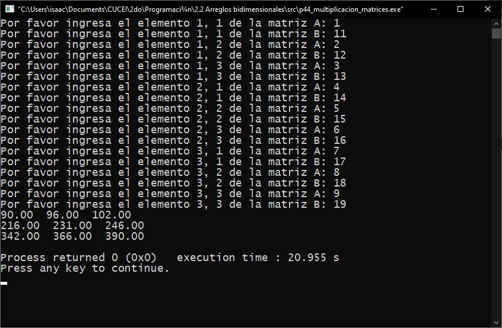

Índice
Módulo 2: Arreglos.
2.1. Definición.
Un arreglo es una variable que provee la opción de disponer de varios datos o espacio para datos a los cuales se puede acceder y se manejan con un mismo identificador, este tipo de variable a pesar de que guarda varios datos, permite la utilización individual de sus elementos, guarda todos sus elementos en espacios continuos en memoria.
2.2. Tipos de arreglos.
2.2.1. Unidimensionales.
Los arreglos unidimensionales son variables estructuradas formadas con un número "n" de variables simples del mismo tipo que son denominadas elementos del arreglo. El número de componentes "n" es la dimensión del arreglo. En programación a este tipo de arreglos tambien se le conocen como vectores.
Estructura de un vector de 5 elementos:
0
1
2
3
4
Valor
7
88
14
0
45
Ejemplo (Práctica 37).
Pseudocódigo:
Librerías
Principal
Inicio
Entero array[15], mayor ← 0, i
Desde (i ← 0; i < 15; inc i)
Inicio
Imprimir("Por favor ingresa el elemento", i)
Leer(array[i])
Fin
Desde (i ← 0; i < 15; inc i)
Inicio
Si (array[i] > mayor)
mayor ← array[i]
Fin
Imprimir("El elemento mayor es: ", mayor)
Fin
Código en C:
Captura en ejecución:

Existe un tipo de arreglo unidimensional que se utiliza para poder suplir lo que en otros lenguajes de programación se conoce como el tio de dato String, las cadenas o cadenas de carácter.
La única diferencia entre los arreglos y las cadenas de carácter es que las cadenas se pueden manipular de manera individual y de manera conjunta, puedes imprimir un solo carácter de la cadena o la cadena completa.
Estructura de una cadena de 5 elementos:
Índice
0
1
2
3
4
Valor
H
O
L
A
\0
Ejemplo (Práctica 46).
Pseudocódigo:
Librerias
Principal
Inicio
Caracter cadena[26]
Entero total
Imprimir("Introduce una oración (máx. 25 carácteres): ")
Leercad(cadena)
total <- Longitud_de_cadena(cadena)
Imprimir("La longitud de la cadena es: ", total)
Fin
Código en C:
Captura en ejecución:

2.2.2. Bidimensionales.
Los arreglos bidimensionales son un tipo de variable estructurada formada de un número "n" de celdas por un número "m" de filas. Tambien se podria decir que son varios arreglos unidimensionales unidos. Este tipo de arreglos utiliza dos índices para ubicar a los datos, el número de fila y el número de celda. Tambien se les denominan matrices.
Estructura de una matriz de 5x5:
Índice
0
1
2
3
4
0
7
88
14
0
45
1
25
50
75
100
0
2
13
39
57
82
91
3
12
3
7
82
92
4
48
12
677
99
101
Ejemplo (Práctica 44).
Pseudocódigo:
Librerías
Principal
Inicio
Entero i, j, k
Real a[3][3], b[3][3], c[3][3], suma
Desde (i ← 0; i < 3; inc i)
Inicio
Desde (j ← 0; j < 3; inc j)
Inicio
Imprimir("Por favor ingresa el elemento ", i + 1, j + 1, "de la matriz A:")
Leer(a[i][j])
Imprimir("Por favor ingresa el elemento ", i + 1, j + 1, "de la matriz B:")
Leer(b[i][j])
Fin
Fin
Desde (i ← 0; i < 3; inc i)
Inicio
Desde (j ← 0; j < 3; inc j)
Inicio
c[i][j] ← 0
Desde (k ← 0; k < 3; inc k)
c[i][j] ← (c[i][j] + (a[i][k] * b[k][j]))
Fin
Fin
Desde (i ← 0; i < 3; inc i)
Inicio
Desde (j ← 0; j < 3; inc j)
Imprimir(c[i][j])
Imprimir(\n)
Fin
Fin
Código en C:
Captura en ejecución:
